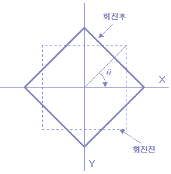

회전 변환(Rotation Operation)
이번에는 영상을 회전하는 것에 대하여 알아보자.

[그림 10] 영상 데이터의 회전 변환
영상을 반시계 방향으로 q도 회전한 식은 다음과 같다.
X = xcosq + ysinq Y = -xsinq + ycosq [식 6]
이것의 역변환은 다음과 같다.
x = Xcosq - Ysinq y = Xsinq + Ycosq [식 7]
이 과정을 프로그램으로 살펴보면 다음과 같다.
¡ 입력 영상을 회전 시키는 함수
/**** function for rotation operation*//****/
void Rotation(float deg){
int i, j, buf1, buf2;
float x, y, p, q;
int xs=SIZE/2;
int ys=SIZE/2;
double r;
float c, s;
int data;
r = deg * 3.141592/180.0; /* radian 값 */
c = cos(r); /* cosine 값 */
s = sin(r); /* sine 값 */
for (i=-ys; i< ys; i++) {
for (j=-xs; j< xs; j++ {
y=j*s + i*c; /* cos(r) -sin(r) *///행렬
x=j*c - I*s; /* sin(r) cos(r) */
if (y>0) buf1 = y; /* 양수인 경우 */
else buf1 = y - 1; /* 음수인 경우 */
if (x>0) buf2 = x;
else buf2 = x - 1;
q = y - buf1;
p = x - buf2;
/* -SIZE/2< buf1 -ys) && (buf1 < ys) &&
(buf2 > -xs) && (buf2 < xs))
data = RetrunData(p, q, buf1, buf2, xs, ys);
else
data = 0; /* 범위에 들어가지 않는 경우 */
if (data < 0) data = 0; /* data가 0 이하 255 이상인 경우*/
if (data >255) data=255;
image_out[i+ys][j+xs]=data;
/* 그외의 경우는 data를 mapping 한 위치에 저장한다. */
}
}
}
위 프로그램에 의한 결과 영상을 살펴보면 [그림 11]와 같다.
 (a) 원영상 (b) deg=315 (c) deg=125
[그림 11] rotate 결과 영상
(a) 원영상 (b) deg=315 (c) deg=125
[그림 11] rotate 결과 영상